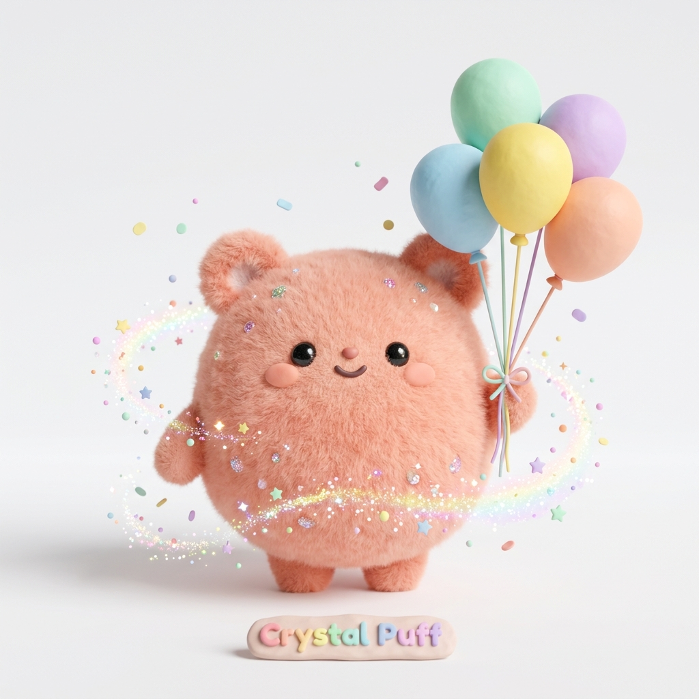

✨ 총 8문항 · 1분 소요
진짜 나를 만나는
8개의 다정한 질문
가벼운 마음으로 나를 돌아보고,
나만의 솔직한 결을 마주해 보세요.
검사 없이 친구들과의 MBTI 궁합 관계망을 바로 확인해요
로그인 없이 편안하게 바로 시작할 수 있어요.
싱글 라이프
1 / 8
주말 충전, 어디서?
🔮
답변의 결을 다정하게 읽어내는 중...
당신이 머문 시선과 마음의 조각을 모으고 있습니다.
✨ 나의 본모습 성향

마음의 결 몽글이: 피치
ENFP
따스한 햇살처럼 온기를 비추는 영감의 요정
사람들의 숨은 매력을 가장 먼저 발견해 진심으로 응원해 주며, 지루한 일상에도 무지개 같은 반짝임을 선물하는 다정하고 사랑스러운 분이에요.
나의 마음 성향 스펙트럼 온도와 결의 균형
외향 (E) 75%
내향 (I) 25%
감각 (S) 20%
직관 (N) 80%
사고 (T) 30%
감정 (F) 70%
판단 (J) 15%
인식 (P) 85%
🌿
상담 노트 1: 내가 지닌 고유한 마음의 결
💡 세상 속에서 자연스럽게 드러나는 나의 모습
🌙 사람들과 있을 때 vs 혼자만의 쉼이 필요할 때
🤝
상담 노트 2: 관계 속에서 편안하게 숨 쉬는 법
🍵 곁에 머물 때 마음이 놓이고 힘이 되는 사람
🌧️ 상처받지 않기 위해 조용히 거리를 두는 순간
🕊️
상담 노트 3: 지친 나를 토닥이는 마음 처방전
💭 마음 에너지가 바닥났을 때 찾아오는 신호
🌸 오늘 나에게 선물하는 다정한 회복의 시간
마음의 케미 레이더
카드를 터치해 매칭 리포트를 확인하세요 👉
❤️ 찰떡 케미
보기 🔍
ENTP, ENFP
🌱 거리두기 케미
보기 🔍
ESTP, ISTP
🪐
New Feature
인터랙티브 관계도
우리들의 MBTI 우주 관계도 💫
내 MBTI를 중심으로 친구를 추가하고 하트 포션 궁합을 확인하세요
💖 찰떡 케미 분석
❤️
98%
내 조용한 세상에 반짝이는 온기를 불어넣는 소울메이트
내 깊은 생각과 고민을 가볍게 여기지 않고, 유쾌한 웃음과 따뜻한 호기심으로 나를 활짝 웃게 해주는 빛 같은 존재예요.
🔍
INFJ님은 어떤 마음의 결을 지녔나요?
✨
두 분이 만났을 때 생기는 마음의 시너지
💌
상담사가 전하는 다정한 관계 팁
관계 준비 💖
관계 궁합 게이지
--%
시너지 지수
마음의 주파수가 포근하게 맞닿는 특별한 인연
점선(+) 버튼으로 함께할 사람을 등록하면 하트 포션이 차오릅니다!
인물을 탭하면 상호 관계망 하이라이트!
연결 0명
⭐
ENFP
(나 · ✏️)
💡 나와 친구 캐릭터를 드래그하여 자유롭게 이동해보세요! (탭하면 상세 정보/MBTI 변경)
👥 관계망에 함께 머무는 친구들
터치하면 포커스 및 하트 포션이 전환됩니다
아직 추가된 상대방이 없습니다. 상단의 점선 (+) 버튼을 눌러보세요!
⭐
내 MBTI 유형 설정
나를 중심으로 모든 관계도와 케미가 분석됩니다.
16가지 유형 중 내 성향을 선택하세요
터치 시 즉시 반영
💫
새로운 인연 등록하기
터치하여 선택
🧪
두 분의 마음 주파수 맞추는 중...
몽글이 하트 포션을 조제하고 있어요 💖
💌
민우 님과의 마음 케미
INFJ
루나
궁합 95%
내면의 깊은 바다를 품은 다정한 사색가
✨
두 사람이 함께할 때 일어나는 시너지
🌸
상담사가 전하는 다정한 관계 팁
✨
민우 & 지우 의 상호 케미
서로의 일상에 기분 좋은 활력과 온기를 주는 관계
⚡
두 사람이 함께할 때 생기는 화학 반응
💡
두 사람을 위한 조화로운 팁